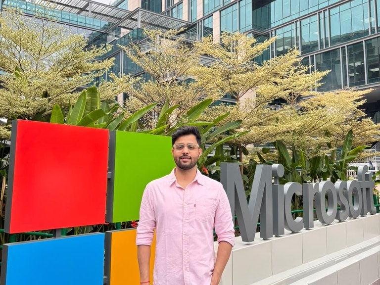
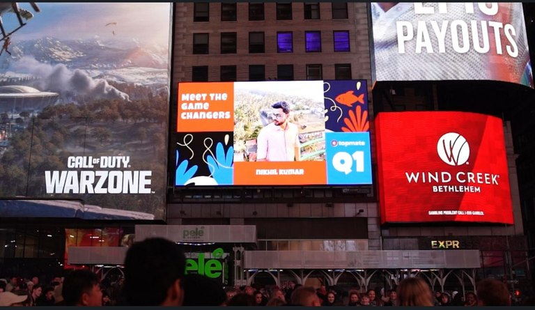

Consumption Billing System
- Problem.
- Turn multi-service, multi-region usage into dependable billing data.
- Impact.
- Delivered a pipeline with three-layer deduplication, extending billing to US government clouds.
Reliable by design.
Measurable in impact.
I engineer distributed systems where correctness matters, from invoice-ready cloud consumption to enterprise policy migration.
8+ years building software at Microsoft, Salesforce, and MakeMyTrip. A focus on the details that make complex systems dependable.
01 / Selected work
Four perspectives on my work at Microsoft: making consumption accurate, understandable, accessible, and easier to adopt.
02 / Experience
From internal business tools to enterprise platforms and cloud consumption systems.
Read LinkedIn recommendationsSoftware Engineer II · Hyderabad (remote)
Delivery and maintenance of multi-region Microsoft Purview consumption billing, product trials, and enterprise migration tooling. A focus on invoice accuracy, consumption transparency, and measurable adoption.
Member of Technical Staff · Bengaluru
Built platform-wide asynchronous job notifications and a flexible B2B licensing and entitlement framework.
Software Engineer · Gurugram
Built an in-house Java and React CRM that replaced paid third-party software, lowered licensing costs, and improved onboarding and query resolution. Delivered agent scheduling and real-time sales and post-sales reporting.
03 / About & toolkit

Bachelor of Engineering
Netaji Subhas Institute of Technology, University of Delhi
2014 – 2018
Best Performing Team
MakeMyTrip, 2019
INSPIRE Scholarship (SHE)
Government of India
My work sits where distributed systems meet real product needs.
At Microsoft, that means getting consumption data ready for billing, making it easier to understand, and helping enterprises adopt new capabilities.
Across eight years of engineering, the recurring challenge has been the same: translate a complex problem into software people can depend on.
Java · C# · Scala · Python · JavaScript · PowerShell
.NET · Spring Boot · Apache Spark · Service Fabric · React · WPF
Azure Event Hubs · ADLS Gen2 · Redis · Kusto / Azure Data Explorer · Key Vault
Distributed systems · Microservices · Event-driven architecture · Multi-region systems · Data correctness · Network security
Git · Jenkins
04 / Mentorship
Practical guidance for students and early-career professionals moving into software engineering or finding their next direction.
You don’t have to figure it all out on your own.
I actively mentor on Topmate, helping people work through career decisions, prepare for interviews, and approach their next opportunity with more confidence.
Prefer to arrange a session directly? View sessions and fees.
Platform-awarded badges, shown as earned distinctions rather than a current ranking.

A mentoring milestone
I was featured in Times Square as one of Topmate’s Quarter 1 Game Changers in 2025.
A memorable moment in a journey that started with a simple intent to give back through mentorship, career guidance, resume reviews, and mock interviews.
Read the story on LinkedInA clearer perspective
“His guidance gave me a much clearer perspective…”
Interview readiness
“…making me feel well-prepared for my upcoming interviews.”
Thinking through system failures
“…valuable pointers, such as considering potential failures…”
Career direction
“…provided a clear roadmap for my career path, suggesting precise study routes.”
Actionable feedback
“…constructive feedback that helped me see where I can improve.”
Looking toward development
“…eager to switch my domain from testing to development.”
A stronger resume
“…improving the content and structure of my resume.”
Confidence with algorithms
“I feel more confident in data structures and algorithms.”
Communicating in interviews
“…suggested to work on my communication skills (thinking out loud)…”
Space for every question
“…thoroughly addressed all my concerns and clarified any doubts…”
Selected testimonial excerpts and profile figures from Topmate, checked . Platform tenure is based on the March 2022 join date. Visit Topmate for current ratings, services, availability, and pricing.
Arrange a direct session
Choose a session, confirm a calendar-free slot, then pay securely through Razorpay Checkout.
Usual availability in IST: weekdays 4–11 PM; weekends 11 AM–11 PM. Sessions finish by 11 PM. Confirmed payments receive a Google Calendar invitation by email.
These fees apply to direct sessions. Topmate bookings follow the pricing shown on Topmate.
Choose a preferred time, not a confirmed booking. These times follow my usual hours; live Google Calendar availability is not connected. Please agree the slot with me before paying.
Payment opens Razorpay Checkout. After a verified captured payment, a Google Calendar invitation is sent to the email above. If confirmation cannot be completed automatically, the paid booking is flagged for manual resolution.
Arrange your preferred date and time by email before paying.
Booking is confirmed only after verified payment. The backend rechecks availability before payment and again before sending the calendar invitation.
Seven perspectives on working and learning together, from engineering and product teams to one-to-one mentorship.
View recommendations on LinkedInDirector of Engineering
Nikhil is very passionate and has great sense of ownership for his work. His focus and commitment keeps things moving smoothly. He ensures all the deadlines are met with the highest standards. He also shows great enthusiasm to take up more work and responsibilities. He shares a great rapport with the team and a great team player who actively provides support to the team when needed.
AI Product Manager, Ex-Uber
Worked on the same team
Nikhil and I have worked very closely on the post-sales charter for the hotel. Nikhil brings the "Can do" attitude to the table. He is extremely hardworking and understands the intricacies very well. Nikhil is a great addition to any team. Good luck Nikhil!
Staff Software Engineer at Walmart
Client
Nikhil has very good expertise on advanced data structures. Nikhil is good in evaluating the person's problem solving and data structures skill and his detailed feedback about the area of weakness/improvements helps in working on weak areas. he asks the right questions to judge the DSA skill and drives the interview by asking follow up questions.
Senior Software Engineer @ Microsoft
Client
I had the pleasure of collaborating with Nikhil at Formation.dev, where he provided invaluable mentorship. Nikhil's deep expertise in computer science subjects and his patient guidance were instrumental in preparing me for technical interviews. He has a knack for breaking down complex concepts and supporting others in their professional growth. I highly recommend Nikhil to anyone looking for a knowledgeable and supportive mentor.
Software Engineer @ Bloomberg
Client
Nikhil has provided me with guidance and support on breaking into the tech industry as a software engineer. During our conversation, Nikhil provided insights into the software engineering interview process and offered creative project ideas that would allow my resume to stand out to recruiters. His advice and resources have been extremely helpful in my journey into the tech field, and I am truly grateful for his assistance.
Game Programmer · Software Engineer
Client
Nikhil is a thoughtful technical mentor when it comes to teaching the Data Structures and Algorithms. I like how he pushes participants during sessions to think of alternative solutions that are more efficient in terms of time complexity than the brute force solution, takes the time to let others understand how a particular approach works, and encourages others to think more deeply about the internals of data structures being used. He does not give answers to questions directly, but rather allows the folks learning to really think about what approaches may work to solve the problem.
Software Developer · Creative · Self-Growth Advocate
Client
I had the opportunity to be mentored by Nikhil throughout my career growth journey and I'm very grateful for his insight, patience and willingness to help both in the technical aspects through instruction but also through career advice and encouragement.
Roles reflect the supplied LinkedIn profile headlines, not necessarily roles held on the recommendation date. LinkedIn may require sign-in.
Experience, projects, and skills in a format you can keep.
05 / Get in touch
Looking for mentorship, career guidance, or interview preparation? Please reach out. I’m also happy to connect about my engineering work.
Connect for mentorship kumarnikhil374@gmail.com